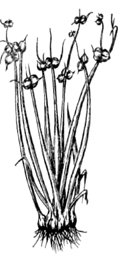
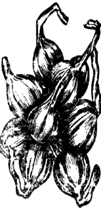
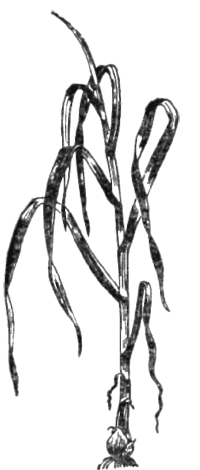

Луковичные
 Лук
Лук(allium)
Многочисленный род многолетних травянистых растений семейства лилейных, обладающих мясистой подземной частью (луковицей) и травянистой надземной частью (пером). Луки насчитывают около 400 видов. В нашей стране произрастает 228, однако только 10 можно причислить к пряным овощам, причем почти половина из них — дикий лук.
Лук принадлежит к числу основных пряностей, как в Европе, так и в Азии. В кулинарии пользуются весьма обширной гаммой луков—от горько-острых до пряно-сладких, которые являются пряной основой для изменения и исправления вкуса всех видов блюд, кроме сладких. На территории СССР употребляются следующие виды лука.
Лук репчатый (Allium сера L.)
Наиболее широко распространенная культурная разновидность, имеющая десятки местных сортов. Делится на острые, полуострые и сладкие.
Острые: арзамасский, балаклейский, харьковский, бессоновский, вертюжанский, тираспольский, вишенский, килинчинский, крутянский, марковский, мстерский, одесский-1, павлоградский, погарский, улучшенный, ростовский кубастый, ростовский репчатый, стригуновский, спасский-255 улучшенный, стригуновский носовский, тереховский, троицкий, уфимский, чеботарский.
Полуострые: андижанский белый, ванский, восточный, даниловский, джонсон-4, дунганский-56, золотой шар, каба желтый, краснодарский Г-35, моздокский, однолетний грибовский 702, однолетний сибирский, однолетний хавский 74, самаркандский красный 172, сквирский (цитаусский), фарабский, хатунархский.
Сладкие: испанский 313 (УССР, Грузия, Киргизия, Таджикистан), ялтинский (УССР, Казахстан, Пермская обл.). Эти сорта выращиваются только в однолетней культуре.
* * *Острые сорта выращиваются преимущественно в средней полосе европейской части СССР, а полуострые и сладкие — на юге. Поэтому в наших национальных кухнях по-разному употребляют лук. На юге его едят вдвое-втрое больше, чем на севере.
Кроме того, различная острота лука влияет и на характер и степень тепловой обработки.
Острые сорта лука наиболее рационально использовать для получения луковых отваров (для соусов), в супы, к рыбным блюдам и для пассирования (томление в масле) с последующим использованием в мясных, овощных, рисовых блюдах и как начинки в пироге. Полуострые сорта, а особенно сладкие, лучше всего использовать в свежем виде — в салаты, к холодным закускам, с бутербродами.
Многоярусный лук (Allium proliferum Schrad)
Возделывается на Северном Кавказе, в Алтайском крае, в таежной зоне Западной Сибири, в Ленинградской области. По внешнему виду похож на репчатый, но имеет одну существенную особенность—на семенных стрелках этого лука вместо цветков и семян образуются воздушные луковицы (бульбочки), причем в два, три и даже иногда в четыре яруса.

Эти бульбочки являются основным средством размножения многоярусного лука, в то время как прикорневые луковицы идут в пищу. Луковицы (они имеют фиолетовый оттенок) на третий год дают до 8—12 луковиц в гнезде.
Многоярусный лук — полуострый. В нем содержится почти вдвое больше витаминов, чем в репчатом.
Лукшалот (Allium ascolonicum L.)
Синонимы: сорокозубка, шарлот.
Родина — Греция, Малая Азия. Широко распространен в культуре на юге СССР — на Северном Кавказе, в Закавказье, на юге Украины, в Молдавии.
Основная внешняя отличительная особенность шалота — его многодетковость: в среднем в гнезде бывает 10—12 луковиц, а при хорошем уходе до 20—30. Луковицы относительно мелкие, но очень хорошей лежкости.

В СССР имеются следующие сорта шалота: русский фиолетовый, острые), кубанский желтый (полуострый) и грузинские шалоты (ванский и борчалинский) — сладкие.
Шалоты обладают кроме остроты различной степени специфическим, более своеобразным, нежным и тонким вкусом и душистым запахом по сравнению с репчатым луком. Они издавна были излюбленной пряностью французской кухни, являясь основой для ароматизации многих соусов и супов. Шалоты — непременный ароматизатор большинства западноевропейских маринадов, баранины пофранцузски, деликатесов из болотной птицы (кулики, бекасы). У нас, к сожалению, шалоты используются мало.
Лукпорей (Allium porram L.)
Выращивается как огородная культура на всей территории СССР, кроме Крайнего Севера.

Используется главным образом утолщенная и вытянутая нижняя белая часть стебля, так называемая «ножка» (ложный стебель, видоизмененная луковица); реже используются плоские, широкие, грубоватые листья порея. Различают зимний порей, с толстыми короткими «ножками» (брабантский и карантанский) и летний порей, с длинной тонкой «ножкой» (сорт «пуату», не зимующий).
У порея отсутствуют резкий «луковый» запах и вкус. Его аромат нежнее, вкус тоньше, приятнее, слаще, чем у репчатого лука. Поэтому «ножки» порея идут для ароматизации различных мясных и особенно овощных (капустные, картофельные, щавелевые, шпинатные, морковные, крапивные) супов-пюре, а также соусов.
Мелкошинкованными листьями порея можно густо обсыпать рыбу, предназначенную для тушения, обжаривания или запекания, поверх (или вместо) панировки.
«Жемчужный лук» — одна из разновидностей порея— используется целиком в салаты.
Лукбатун (Allium fistalosum L.)
Родина — Центральная Азия. Культивируется во всех странах Европы, Азии и Америки.
Батун зимует прямо в открытом грунте и разводится специально для получения зеленого пера, которое он дает очень рано, как только сойдет снег. Срезку пера можно вести все лето.
Батун используется в основном в салаты и гарниры.
Русская (европейская) разновидность батуна — самая острая; азиатская — так называемый японский батун — более нежная.
Шнитт-лук (Allium schoenoprasum L.)
Синоним: резанец, скорода. Отличается исключительной морозостойкостью, может возделываться в северной зоне, вплоть до Крайнего Севера (на Кольском полуострове, в низовьях Печоры, Оби, Енисея, Лены, на Камчатке — где растет дикая разновидность шнитт-лука). Дает главным образом зеленое перо; луковицы его малы по размерам, но многочисленны — 15—20 в гнезде. Нежная на вкус зелень шнитт-лука собирается несколько раз в сезон. Употребляется в салаты, супы, омлеты, с маслом и творогом, смешивается с другими пряными травами.
Мангир (Allium senescens L.)
Синоним: стареющий лук. Дикорастущий лук, распространенный в Бурятии, Прибайкалье и Забайкалье, в Восточной Сибири. Растет на сухих, каменистых местах. Луковицы цилиндрическоконической формы, сочные, очень приятные, нежные на вкус; листья плоские.
Используются только молодые листья и луковицы ранней весной, преимущественно в свежем виде. Позднее листья становятся жесткими, а луковицы приобретают излишнюю горечь, поэтому их сушат (для ослабления терпкости), выкапывая осенью, и употребляют в сушеном виде в супы, для сдабривания рыбных блюд и т. п. Молодые луковицы мангира (весной) употребляют, как полуострые сорта репчатого лука.
Алтайскийлук (Allium altaicum Pall.)
Синонимы: сибирский дикий лук, каменный лук, боровой лук, сончина, курайский лук, монгольский лук. Дикорастущий лук. Родина — Центральная Азия. В СССР распространен на Алтае, в Шории, Бурятии и Туве. Имеет сочные продолговато-яйцевидные луковицы диаметром 2—3 сантиметра, желто-зеленоватого цвета в разрезе, листья трубчатые, цилиндрические. Используется, как полуострые луки.
Пскемский лук (Allium pskemense Fedtsch)
Синоним: пиез-ансур, горный лук. Дикорастущий лук. Родина — Тянь-Шань, Ташкентский Алатау.
Луковица крупная, яйцевидно-удлиненной формы, диаметром 5—6 сантиметров, на разрезе беловато-фиолетового цвета; листья цилиндрической формы, трубчатые. Пскемский лук обладает сильным и резким, ароматом и вкусом луковиц, хорошим вкусом зелени. Относится к острым лукам. Используется в национальной кухне казахов, киргизов, узбеков и таджиков, чаще всего в маринованном виде.